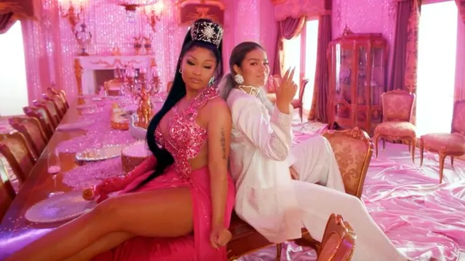

2020
TUSA
"Tusa" es una canción de reguetón lanzada en 2019 por la cantante colombiana Karol G en colaboración con la rapera trinitense Nicki Minaj. Es una canción que habla sobre superar una ruptura amorosa y seguir adelante con fuerza y actitud positiva. Origen del nombre: "Tusa" es un término coloquial en Colombia y otros países de América Latina que se refiere al sentimiento de tristeza profunda que se experimenta tras una ruptura amorosa. La canción captura este sentimiento pero también lo combina con un mensaje de superación y empoderamiento. Colaboración con Nicki Minaj: Esta colaboración marcó la primera vez que Nicki Minaj cantó en español en una canción. Su participación en "Tusa" generó mucha atención internacional y contribuyó al éxito global de la canción. Éxito en listas de música: "Tusa" alcanzó el número 1 en varios rankings de música alrededor del mundo. En Argentina, la canción también tuvo un gran impacto y logró llegar al puesto número 1 en el ranking de canciones más populares.

Artistas
-
Karol G (Carolina Giraldo Navarro): Es una cantante y compositora colombiana nacida el 14 de febrero de 1991 en Medellín, Colombia. Comenzó su carrera musical en el género reguetón y ha logrado un gran éxito en la industria musical latina. Karol G es conocida por su estilo versátil que combina el reguetón con otros géneros como el pop y el trap, lo que le ha permitido ganar popularidad en todo el mundo. Algunas de sus canciones más conocidas además de "Tusa" incluyen "Bichota", "Ahora Me Llama" y "Secreto".
-
Nicki Minaj (Onika Tanya Maraj): Es una rapera, cantante y actriz trinitense-estadounidense nacida el 8 de diciembre de 1982 en Puerto España, Trinidad y Tobago. Nicki Minaj es una de las artistas femeninas más influyentes en la industria del hip hop y del pop. Es conocida por su estilo único, su habilidad para el rap y su capacidad para mezclar diferentes estilos musicales en sus canciones. Antes de "Tusa", Nicki Minaj había lanzado numerosos éxitos como "Super Bass", "Anaconda" y "Starships".